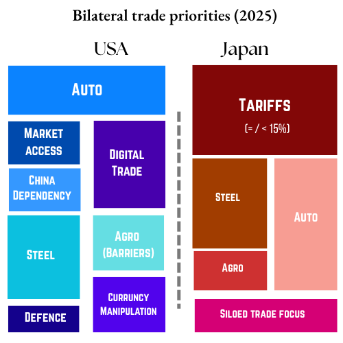

US-Japan trade summary (2024)
In 2024, US goods imports from Japan were ~$152.06 billion, ~4.5 % of total US goods imports Japan’s top export destination is the US, accounting for ~20 % of its total exports worth $141 billion in 2024. ~11.4 % of Japan’s imports in 2024 came from the US amounting to $84.7 billion. US exported $79.7 billion in goods to Japan in 2024, ~3.9 % of total US goods exports; services trade pushes the bilateral total higher.
US- Japan Trade: Key sectors
Japan → US Goods: transport equipment (~21 %), machinery (~19 %), electrical machinery (~19 %) plus chemicals, manufactured goods (~10‑12 %)
Japan → US Services: significant volumes in travel, business, financial, and tech‑related services (outside of goods statistics).
US → Japan Goods: $79.7 b of exports; key exports include agricultural goods (corn, wheat, rice), LNG, industrial machinery, aerospace products.
US → Japan Services: intellectual property royalties, professional & technical, telecom/information services (Japan symmetric services imports).
Negotiation timeline
February 2025
Feb 7: Prime Minister of Japan Shigeru Ishiba visits Washington; Trump pledges to eliminate US–Japan trade deficit “very easily” via US LNG exports and increased Japanese investment ($550 b).
March 2025
Mar 11: Trade minister Yoji Muto fails to secure exemption from looming 25% tariffs; US signals inclusion in reciprocal tariff regime; indirect emphasis on gas/auto cooperation continues.
April 2025
April 2025 (early): USTR refuses full exemption; Japan’s car/steel stock markets tumble on tariff threat; PM Ishiba rebukes move as “disappointing”.
Active Tariffs: 10% baseline on Japanese imports, 25% on autos, higher (27%) on select goods. Steel/aluminium 25%
June 2025
July 7: Trump announced the extension of the “90-day pause” to August 1. New tariff deadline set for countries, including Japan.
July 15: White House announced a 25% tariff on Japanese imports effective August 1, then negotiated a reduction.
July 22: US-Japan trade deal finalised lowering tariffs on Japanese autos and many goods to 15% effective August 1; Japan pledges $550 billion US investment.
Japan’s chief negotiator Akazawa travels to Washington to secure executive order for tariff implementation and no-stacking clause.
July 31: Trump signed executive orders formalising country-specific rates, including Japan, at 15% tariff from August 1 instead of the initially announced 25%. Existing 50% tariff on Japanese steel/aluminium remains, as does 25% auto tariff on some categories.
Active Tariffs: Imports: 10%; Autos: 15%; Steel/Aluminium: 50% (from 25)
August 2025
Aug 1: 15% tariff on Japanese goods officially implemented; Japanese auto and general manufacturers see improved sentiment. Steel/aluminium retains 50% tariff.
Aug 8: Japanese officials visit Washington; US agrees to correct mistakes in implementation of the deal (including beef tariffs, which rose from 26.4% to 41.4%). No rollback yet confirmed.
Aug 11: White House documents trade actions; country-specific “reciprocal” tariffs on Japan set at 15%—lower than previously feared, but sector-specific rates linger.Active Tariffs: General 15%; Autos 15%; Steel/Aluminium: 50%; Beef: 41.4%
September 2025
October 2025
November 2025
December 2025
January 2026
Jan 2: Phone call reported between President Trump and Japan’s leadership reaffirming engagement on bilateral trade/tariff talks (context for ongoing negotiation posture).
Adnkronos EnglishJan 13: Japanese officials reported delays/coordination problems in implementing parts of the previously negotiated tariff package (technical/administrative snag noted by Tokyo press).
NipponJan 20: Japanese commentary pieces summarised Japan’s difficulty in solidifying long-term tariff/investment details with the U.S., urging deeper talks on investment commitments and carve-outs.

Understanding USA’s Priorities
The US aims to access Japan’s agricultural market and tried to take advantage of the rice price hikes since the spring. The US also want Japanese companies to invest in US with a focus on auto-manufacturing. US also aims to decouple Japan from Chinese supply chains. US hopes to leverage its Strategic partnership with Japan to expand on multiple parts of this agreement.
Priorities
- Tariff rollback to 15% vs threatened 25%/35% – Secured a deal replacing looming 25% tariffs with a flat 15% reciprocal tariff on Japanese imports as of July 2025
- Japanese $550 b investment pledge – Massive financial commitment to US energy, semiconductors, infrastructure, with US receiving ~90% of profits; touted as a key leverage point in the deal
- Autos and market access opening – Japan agrees to open to US-made cars, trucks, rice, agriculture, and remove previous technical barriers
- Steel & aluminium tariffs remain at 50% – Deliberately left out of the fall-back 15% tariff framework; continues as pressure point for US protectionist policy.
- Trade regulatory alignment – Consumer price impact from 15% tariff – Potential hikes on Japanese cars, electronics, sake, motorcycles ($2000‑$6000 per item), raising concern in US consumer press.
Understanding Japan’s Priorities
Japan hopes to deal with trade as a separate issue from defence, strategic affairs and currency. It aims to protect its domestic agricultural sector while also protecting its auto exports. Japan is more flexible in negotiating on metal exports since its metal exports are considerably lower than its large auto sector.
Priorities
- Avoidance of 25 % auto/auto‑parts tariffs – Shigeru Ishiba warned of “all options” if tariffs applied; final deal slashed tariff to 15%, averting sharp disruption
- Maintaining exemption “no‑stacking” of tariffs – Japan pushed to be excluded from stacking higher auto/industrial tariffs; USTR assured similar treatment to EU; chief negotiator Akazawa pressed for executive order to enforce it
- Ensuring investment deal provides returns for Japan – While US gets majority profit share, Akazawa emphasised that Japan’s own benefits (e.g. supply chain investments) need clear definition and reciprocal guarantees
- Energy and LNG cooperation with US – US pushing Japan to import US LNG (e.g. Alaska pipeline joint venture) to reduce trade imbalance; part of broader economic alignment goals
- IPR & non‑tariff barriers discipline – Japan committed to relax some vehicle/regulatory barriers; under pressure to broaden access in agriculture, beef, dairy, biotech as per USTR concerns.
References
- https://www.aberdeeninvestments.com/en-us/institutional/insights-and-research/us-japan-trade-talks-a-road-map
- https://www.whitehouse.gov/fact-sheets/2025/07/fact-sheet-president-donald-j-trump-secures-unprecedented-u-s-japan-strategic-trade-and-investment-agreement/
- https://theasiagroup.com/trade-talks-roll-past-u-s-deadline-august-1-2025/
- https://www.csis.org/analysis/assessing-us-japan-trade-deal-announcement
- https://www.congress.gov/crs-product/IF11120